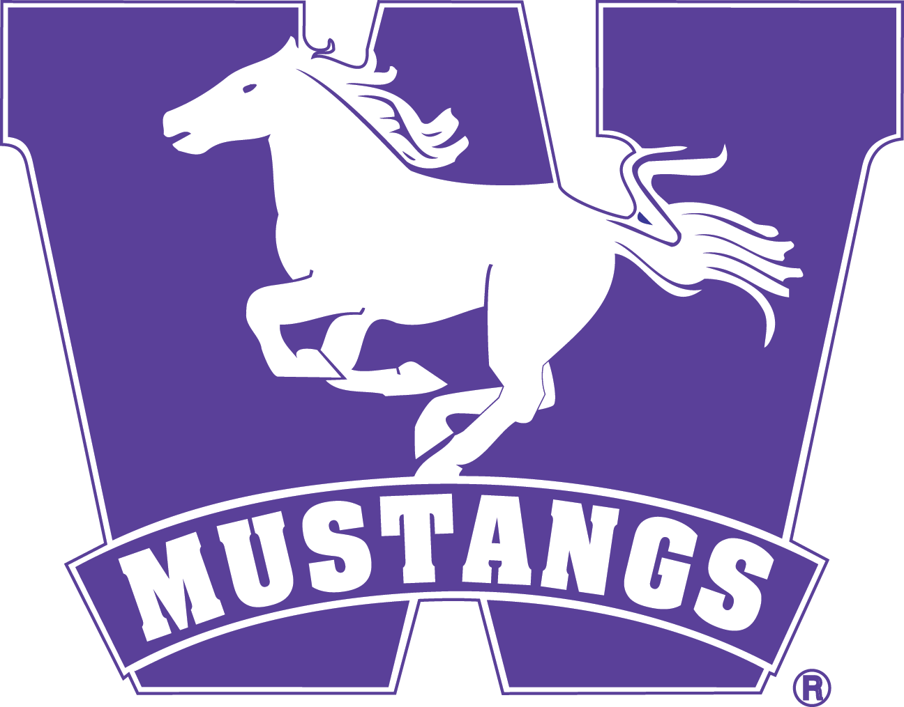

Studying blood flow with clinical relevance and computational precision.
This template gives your lab a strong starting point for a GitHub-hosted website. It is built with plain HTML, CSS, and JavaScript so it stays simple, fast, and easy to learn.

Featured Focus
Flow dynamics in complex vascular systems
Replace this text with your lab’s focus areas such as aneurysms, arterial stiffness, computational fluid dynamics, imaging-informed modeling, or medical device analysis.
About The Lab
Where engineering, physiology, and data-driven medicine meet.
This area is a good place to introduce your principal investigator, your lab’s mission, and the kinds of scientific or clinical questions you work on. Because this template is static, the content is written directly into the page and can be changed with a text editor.
If you want, we can later expand this into multiple pages for team bios, publications, and contact details without changing the basic hosting approach.
Research Themes
Example sections you can quickly adapt to your actual work.
Computational Modeling
Simulate blood flow and wall mechanics to study how vascular geometry shapes physiological behavior.
Imaging & Measurement
Integrate ultrasound, MRI, or CT-based data to connect patient anatomy with modeled hemodynamics.
Clinical Translation
Use engineering insights to support disease understanding, risk assessment, and treatment planning.
Meet the Lab Team.
PI
Dr. Laura K. Fitzgibbon-Collins
Principal Investigator
MS
Joshua Andari
Master’s Candidate
PhD
Micheal Nikpal
PhD Candidate
Featured Publications
Use this area for papers, posters, or conference talks.
2026
Author A, Author B, Author C.
Example paper title related to vascular hemodynamics. Journal Name.
2025
Author A, Author B.
Example conference abstract or poster title. Conference Name.
Contact
Invite collaborators, students, or clinical partners to connect.
Email: yourlab@university.edu
Location: Building Name, Department, University
Office Hours: Add optional details here